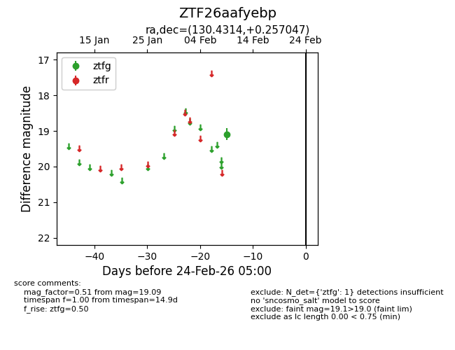
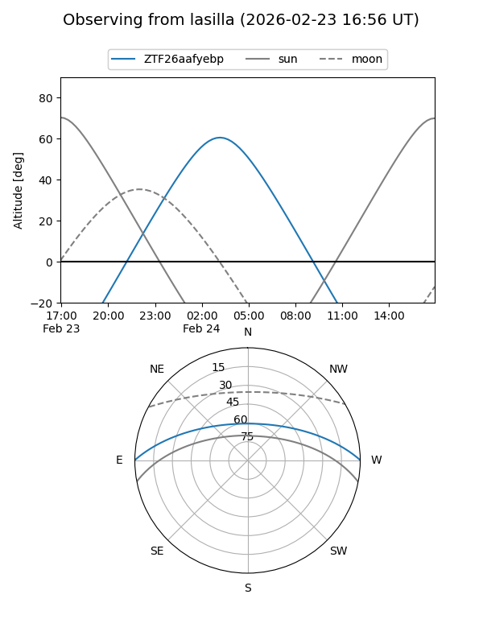
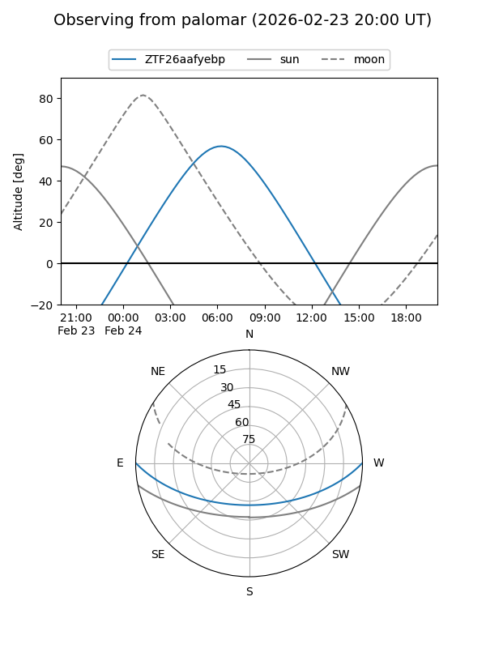

ZTF26aafyebp
Target ZTF26aafyebp at 2026-02-24 09:08
Aliases and brokers:
FINK: link
Lasair: link
ALeRCE: link
alt names
ZTF26aafyebp (ztf,fink_ztf)
Coordinates:
equatorial (ra, dec) = 130.4314,+0.25705
equatorial (HMS+DMS) = 08:41:43.52,+00:15:25.37
galactic (l, b) = (226.0801,+24.45524)
Flags:
Photometry:
last ztfg=19.09
1 ztfg detections
Lightcurve

Visibility


Additional plots